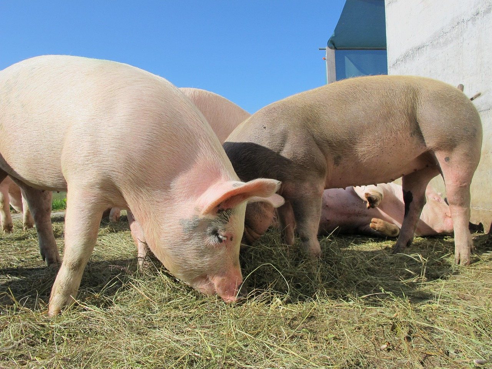

🐐 Chevre
Les chèvres sont élevées pour leur lait ou leur viande. Certaines races sont réputées pour produire un lait de qualité, souvent utilisé pour le fromage.

Les cochons sont principalement élevés pour leur viande. Il existe différentes races adaptées à la production de charcuterie ou de viande fraîche.
Les chèvres sont élevées pour leur lait ou leur viande. Certaines races sont réputées pour produire un lait de qualité, souvent utilisé pour le fromage.